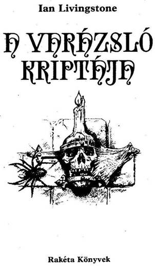
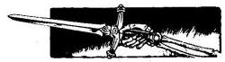
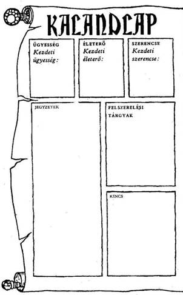
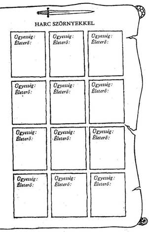

A mű eredeti címe:
Crypt of the Sorcerer
Fordította:
Varsányi Mária
John Sibbick illusztrációival
Copyright © lan Livingstone, 1987
Illustrations copyright © John Sibbick, 1987
All rights reserved.
Hungarian translation © Varsányi Mária, 1993
Ennek a könyvnek te vagy a hőse. Te vívsz meg a kocka segítségével az óriásokkal és a szörnyekkel, magad döntesz, hogy merre haladj tovább, kivel barátkozz és kivel csatázz. Nem pusztán az író fantáziája irányítja a történetet, hanem a te bátorságod, kíváncsiságod, leleményességed, kalandvágyad és józan eszed is.
Játék és regény egyszerre, amit a kezedben tartasz. Kalandos vállalkozás, amelybe bele is lehet bukni, de ha jól döntesz, sikerrel jársz.
Így hát ezt a könyvet ne úgy olvasd, ahogy egyébként olvasni szoktál. Mint látod, itt még az oldalak sincsenek megszámozva a bevezető után, hanem a hosszabb-rövidebb bekezdések viselnek számokat egytől négyszázig. Ezek között előre-hátra lapozva haladsz előre a történetben a saját igényeid szerint. Ha kardot rántasz az ellenségre, máshová lapozol, mint ha elbújnál előle.
Barbár harcosok, varázslók, szörnyetegek, törpék népesítik be ezt a fantasztikus világot. Mi kell ahhoz, hogy ne bukj el közöttük? Csak az, ami a mindennapi élethez is: ügyesség, jártasság, ötletesség; az, hogy felkészülten várd a nehézségeket.
És Szerencse, amely nélkül az előző három talán mit sem ér, de ha csak erre számítasz, biztosan cserben- hagy.
Hogy mit jelent az ÜGYESSÉG, ÉLETERŐ és SZERENCSE ebben a könyvben, megtudod a
következőkből. Ha netán nem lenne teljesen világos a dolog, ne törődj vele. Bátran előre! Vágj neki az olvasásnak, menet közben minden a helyére kerül! De ha elfelejtenéd, hogyan kell jól megvívni egy csatát, hogyan menekülhetsz, hogyan gyógyíthatod magad a játék szabályai szerint, nyugodtan visszalapozhatsz.
Játékszabály
Mielőtt belevágnál ebbe a kalandba, fel kell mérned, mennyire vagy erős, illetve gyenge.
Dobókockával döntsd el kezdő SZERENCSE, ÜGYESSÉG S ÉLETERŐ pontjaidat, hogy megtudd, milyen hatékonyak voltak előkészületeid. A 16-17. oldalon találod a Kalandlapot, amelyre feljegyezheted kalandod részleteit. Ugyanitt jelölheted ÜGYESSÉG és ÉLETERŐ pontjaidat is.
Jól teszed, ha ceruzával írod a pontokat a Kaland- lapra, vagy fénymásolatot készíttetsz erről az oldalról, hogy újabb játékra is felhasználhasd.
ÜGYESSÉG, ÉLETERŐ ÉS SZERENCSE
Dobi az egyik kockával. Adj 6-ot a dobott számhoz, és az összeget írd be a Kalandlap ÜGYESSÉG négyzetébe.
Dobi mindkét kockával, és az eredményhez adjál 12-t, a kapott számot írd be az ÉLETERŐ négyzetbe.
Van egy SZERENCSE rovat is. Ehhez egy kockával dobj, és 6-ot adj az eredményhez, majd az összeget írd be a SZERENCSE négyzetbe.
Különböző okok miatt, melyeket majd részletesen elmagyarázunk, ÜGYESSÉG, ÉLETERŐ és SZERENCSE pontjaid a kalandok során folyamatosan változnak. Pontosan kell vezetned őket, ezért azt tanácsoljuk, hogy kis betűkkel írj a négyzetekbe,
vagy tarts kéznél radírt. De soha ne töröld ki a kezdő pontjaidat, mert szerezhetsz ugyan további ÜGYESSÉG, ÉLETERŐ és SZERENCSE pontokat, de összegük soha nem lépheti túl a kezdeti értéket, kivéve néhány nagyon ritka alkalmat, amikor a megfelelő oldalon ezt az utasítást kapod.
ÜGYESSÉG pontjaid kardvívótudásodat és általános harckészségedet mutatják. Nem árt minél több ilyen pontra szert tenni. Az ÉLETERŐ pontok jelzik kondíciódat, az akaraterődet, hogy túlélj egy-egy helyzetet, továbbá eltökéltségedet és állóképességedet; minél magasabb az ÉLETERŐ pontszám, annál hosszabb ideig maradhatsz életben. A SZERENCSE pontok mutatják, mennyire vagy Szerencsés ember.
A szerencse és a varázslat az úr abban a fantasztikus birodalomban, amelybe most behatolsz.
A CSATA
Sűrűn találsz majd olyan oldalakat, ahol azt az utasítást kapod, hogy küzdj meg valamilyen teremtménnyel. Lehet, hogy lesz választási lehetőséged; ha mégsem, vagy ha úgy döntesz, hogy vállalod a harcot, azt a következő módon kell megvívnod:
Először is, jegyezd fel a teremtmény ÜGYESSÉGÉT és ÉLETEREJÉT a Kalandlapod első üres „Harc Szörnyekkel” feliratot viselő rovatába. A teremtmények pont- számait minden alkalommal megadja a könyv, amikor összecsapsz valamelyikükkel.
A harc menete
CSATA EGYNÉL TÖBB TEREMTMÉNNYEL
Ha egyszerre egynél több lénnyel kerülnél összeütközésbe, mindig közöljük veled a harcra vonatkozó utasítást az adott Pont alatt. Néha egyszerre kell velük megküzdened, néha meg mindegyikkel külön-külön.
SZERENCSE
Kalandjaid során, akár csatában, akár olyan helyzetekben, amikor a SZERENCSE dönthet sorsod felől (az erre vonatkozó utasítást az adott fejezetpontok alatt megkapod), a SZERENCSÉDRE is számíthatsz, hogy az események kimenetele számodra kedvező legyen. De vigyázz! A SZERENCSÉRE számítani kockázatos, és ha balszerencsés vagy, az eredmény végzetes lehet.
SZERENCSÉDET a következő módon teheted próbára. Dobj mindkét kockával. Ha a kapott szám nem nagyobb, mint a jelenlegi SZERENCSE pontszámod, az eredmény kedvező. Ha magasabb számot dobsz, mint a jelenlegi SZERENCSE pontszámod, balszerencséd volt, és vállaid a következményeit.
Úgy hívjuk ezt, hogy „Tedd próbára a SZERENCSÉDET!” Minden alkalommal, amikor próbára teszed a SZERENCSÉDET, 1 pontot le kell vonnod SZERENCSE pontszámodból. Így hamar rájössz, hogy a SZERENCSÉRE hagyatkozni kockázatos.
A SZERENCSE használata csatában
A könyv bizonyos oldalain felszólítunk, hogy Tedd próbára SZERENCSÉDET!, és közöljük, hogy SZERENCSÉD volt-e vagy sem. A csatákban viszont mindig te döntesz, hogy a SZERENCSÉD segítségével megpróbálsz-e komolyabb sebet ejteni azon a teremtményen, amelyet éppen megsebeztél, vagy csökkenteni próbálod-e annak a sebnek a hatását, amelyet a teremtménytől elszenvedtél.
Ha te sebezted meg a teremtményt, a fent leírt módon Tedd próbára a SZERENCSÉDET! Ha szerencsés vagy, komoly sebet ejtettél rajta, és 2 külön pontot levonhatsz a teremtmény ÉLETEREJÉBŐL. Azonban ha nincs SZERENCSÉD, vagy a seb, puszta karcolás volt, és 1 pontot vissza kell adnod ellenfeled ÉLETERŐ pontjaihoz. (Tehát: a szabályos 2 pont levonás helyett most csak 1. pontot vonhatsz le tőle.)
Ha a teremtmény megsebzett, Tedd próbára a SZERENCSÉDET!, hogy enyhítsd a sebet. Ha SZERENCSÉD van, sikerült elkerülnöd a teljes csapást, 1 pontot visszaadsz magadnak (2 pontos kár helyett csak 1 pontos kár keletkezett az ÉLETERŐDBEN). Ha nem volt SZERENCSÉD, komolyabb találat ért, plusz 1 ÉLETERŐ pontot vonj le magadtól.
Ne feledd, hogy minden alkalommal le kell vonnod 1 pontot adott szerencse pontszámodból, ahányszor próbára teszed a SZERENCSÉDET!

AZ ÜGYESSÉG, ÉLETERŐ
ÉS SZERENCSE VISSZAÁLLÍTÁSA
A KEZDETI ÉRTÉKRE
ÜGYESSÉG
ÜGYESSÉG pontjaid nem sokat fognak változni kalandjaid során. Helyenként, egy-egy oldalon olyan utasítást találsz, hogy növeld vagy csökkentsd ÜGYESSÉG pontjaid számát. Egy csodafegyver növelheti ÜGYESSÉGEDET, de ne feledd, hogy egyszerre csak egy fegyvert használhatsz. Nem tarthatsz igényt 2 ÜGYESSÉG jutalompontra, mert két varázskardod van. ÜGYESSÉG pontjaid száma soha nem lépheti túl az eredeti értékét, hacsak külön utasítást nem kapsz rá.
ÉLETERŐ
ÉLETERŐ pontjaid sokszor fognak változni kalandjaid során, amint megküzdesz a szörnyekkel, és lelkesítő feladatokat vállalsz. Ahogy a célodhoz közeledsz, ÉLETERŐ pontjaid száma veszélyesen csökkenhet, és a csaták különösen kockázatossá válnak, ezért légy óvatos! Az ismert
Kaland Játék Kockázat könyvektől eltérően itt ÉLELEM nélkül vágsz neki a kalandjaidnak. Természetesen utad során különböző módon helyreállíthatod ÉLETERŐDET, de ne feledd, hogy ÉLETERŐ pontjaid száma sohasem lépheti túl a kezdeti értéket, kivéve, ha egy adott oldalon ezt az utasítást kaptad.

SZERENCSE
SZERENCSE pontjaidhoz továbbiakat szerezhetsz kalandjaid során, ha kivételesen SZERENCSÉS vagy. Ennek részleteit megtalálod a könyvben. Ne feledd, hogy az ÜGYESSÉGHEZ és az ÉLETERŐHÖZ hasonlóan SZERENCSE pontjaid sem léphetik túl kezdeti értéküket, kivéve, ha egy-egy oldalon ezt az utasítást kapod.



Háttértörténet
Kelyhesd kicsiny város a Holdkő dombok lábánál kanyargó Ezüstfolyó partján. Valamikor régen csupán néhány viskó állt itt - idővel azonban a hely terebélyesedni kezdett, és lassan az aranyásók kereskedelmi központjává nőtte ki magát. Itt találtak biztos menedékre azok a kereskedők, akik nyugat felé vették útjukat, a Nagy Síkságról Silverton felé. Kelyhesd városában megpihenhettek és kedvükre üzletelhettek, mert nem kellett támadástól tartaniuk. Allansia leglármásabb városa volt ez, ahol temérdek fogadó és szórakozóhely várta az odatévedőket.
De most, amikor kipillantasz az „Oroszlánhoz" címzett fogadó emeleti ablakán, semmi jelét nem látod a vígságnak. Az égbolt három hete sötét és komor. Az emberek, akik mostanság érkeztek kelet felől Kelyhesdre, ragályról, pestisről, kórságról és éhínségről beszélnek, mely egyre jobban fenyegeti a nyugati területeket.
A városban épp a minap terjedt el futótűzként a hír, hogy valaki felfedezte, hol lapul a gonoszság forrása. Egy Elf volt az, aki hatalmas sasmadarán dél felé szárnyalt. A Holdkő dombok déli csücske felett észrevett egy feneketlen hasadékot a mélyben, melyből orrfacsaró bűz áradt. A hasadék környékén megfeketedett a fű, a fák elsatnyultak és elhullajtották leveleiket. Amikor az Elf a lyuk felé
repült, mint elmondta, egy megperzselődött, összeaszott kezet látott kinyúlni a repedésből, amely mutatóujját a sasnak szegezte. Villám lövellt ki ujjhegyéből, és keresztülégette a szerencsétlen madarat, mely élettelenül zuhant a földre. Az Elfnek azonban sikerült megmenekülnie. Gyalogszerrel indult el Kelyhesdre, hogy hírül adja, mi történt vele.
Barátja vagy Yaztromónak, az agg mágusnak, aki a Fekete Erdő déli peremén lakik. Úgy határozol, hogy meglátogatod, és elmeséled neki az Elf történetét. A borongós napfényben észak felé nyargalsz Yaztromo tornyához, és még az éj beállta előtt eléred a gazzal benőtt ösvényt, mely otthonához vezet. Fürgén leszállsz a lovadról, a hatalmas tölgyfa ajtóhoz lépsz, és megkongatod a kapu fölötti rézharangot. Válasz nem jön, de hirtelen valaki a válladra teszi a kezét, mire megpördülsz és a kardod után kapsz.
- Semmi szükség erre! - dörren rád az előtted álló Öregember, ujját figyelmeztetően fölemelve. - Egyébiránt mi dolgod neked errefelé, miére zavarod meg békémet? Már csaknem egy esztendeje, hogy nem láttalak, most meg beállítasz hívatlanul, átgázolsz a kertemen, és úgy rázogatod a csengőt, hogy még a holtakat is felébreszted. Kérdem hát, mit akarsz?
Mosolyogva nézed a mogorva vén mágust, amint szokásos vendégszeretetével üdvözöl. - Aztán mi olyan mulatságos? - kérdi. Arcod elkomorul, mire Yaztromo, szemöldökét ráncolva, rád pillant. - Azt hiszem, fel kellene mennünk az emeletre, hogy elmondhasd, mi az, ami a lelkedet nyomja. Feltételezem, van valami oka annak, hogy meglátogattál engem, és sejtem, hogy a dolognak köze van ehhez a pokolian sötét éghez.
Amikor befejezed az Elf történetét, az ódon tölgyfa székben ülő Yaztromo szótlanul bámul maga elé. Aztán minden szónál nagyokat sóhajtva végre beszélni kezd. - Akkor hát beigazolódtak a félelmeim. A Szellemidéző feltámadt. Azok a bolondok! Kapzsiságuk most mindenki vesztét okozhatja Allansiában... Hacsak...
Tanácstalanul hallgatod Yaztromo morgolódását, és megkéred, adjon magyarázatot. Mintha egy rettenetes rémálmot idézne fel, részletesen elmeséli a gonosz Szellemidéző, Razaak legendáját, azét a Razaakét, aki már 100 éve tartja félelemben Allansiát.

Habár egy Jóságos mágusnál kezdte a tanok elsajátítását, Razaakot már gyermekkorában vonzotta a Gonoszság sötét ereje. Ráeszmélt, hogy hatalmas varázslóvá válhat, aki egy nap mindenkit arra kényszeríthet majd, hogy az ö akaratának engedelmeskedjék. Varázserejével nem Allansiát akarta segíteni, hanem azt akarta elérni, hogy a királyság az ő lábai elé boruljon. Kelet-Allansia távoli zugába utazott, és ott tanulta ki a misztikus tanokat. Kezdő tanoncként szédítő gyorsasággal lépett egyre magasabbra a sötét mágia lépcsőfokain, mígnem
mágus, majd pedig varázsló lett, és akkora hatalomra tett szert, hogy Szellemidézővé vált. Életének utolsó 40 évét magányban töltötte el. Végül aztán Razaak üzenetet küldött Allansia összes nemesemberének, azt követelve, hogy ismerjék el uralkodójuknak. Először ügyet sem vetettek rá, mivel senki fia nem hallott róla. Razaak rossz néven vette a dolgot, és válaszként dögvészt, ragályt zúdított a nemesek birtokaira, ezzel adván értésükre, hogy a következő teliholdig kapnak haladékot, hogy uralmát elismerjék.

Számtalan harcos ajánlkozott, hogy kioltja Razaak életét, és számtalan hullott el a harcban. Csak egyetlen férfi járt sikerrel, Kull, aki megmentette Allansiát. Birtokában volt egy kard, amelyet a Holdkő dombok között lelt, egy köd borította tóból kiemelkedő kéz markában, miközben tutajával arra hajózott. Kullt megigézte a kard nemes szépsége, és érte nyúlt. A csontváz nem ellenkezett, és miután eleresztette a kardot, visszasüllyedt a tó lapos mélyére. Kull képtelen volt levenni szemét a kardról, és már semmi más nem érdekelte. Tutaját a part felé irányította, és nyomban kipróbálta az új fegyvert. Rájött, hogy annak éle semmitől sem csorbul ki, még a páncélruhát is könnyűszerrel
átvágja. Nem is gondolt rá, hogy a kard egykoron Razaaké volt, és hogy ez az egyetlen fegyver az egész világon, mely hatalmával képes a varázslót elpusztítani. Razaaknak ahhoz, hogy Szellemidézővé váljon, meg kellett válnia összes fegyverétől, de nem volt elég ereje ahhoz, hogy megátkozott kardját is megsemmisítse. A tóba hajította, hogy megszabaduljon tőle, de a fegyver a csontváz markában a víz felszínére került.
A kéz évekig szorította a kardot mindaddig, amíg Kull meg nem pillantotta és el nem vette tőle... így hát a sors a legyőzhetetlen Kullt Razaakhoz vezette, és Razaak Kull keze, azaz saját kardja által győzetett le. Abban a pillanatban azonban, amint Razaak megsemmisült, Kull húsa lefoszlott a csontjairól, és porrá vált. Razaak varázsereje örök kárhozatra ítélte csontváztestét, mely képtelen szabadulni a kardtói. Kerített egy csuklyás palástot, a Holdkő dombok közé menekült, és az a szóbeszéd járja, hogy tutajával mind a mai napig ugyanazon a tavon hajózik, kezében a karddal, és ez végestelen-végig így megy majd, amíg valaki el nem veszi tőle fegyverét.
Razaak testét eközben egy kőszarkofágba helyezték, és a Déli Dombok között egy hasadékba temették. A kriptát egy Jóságos varázsló pecsételte le, és úgy rendelkezett, hogy 110 esztendeig kell zárva maradnia -ellenkező esetben a Szellemidéző egy sereg élőholt kíséretében kiszabadul, hogy minden életet megsemmisítsen.
- Egyedül azt tudom elképzelni, - vonja le a tanulságot Yaztromo mély sóhajjal - hogy kincsvadászok találták meg a Szellemidéző kriptáját, és tudatlanságból kinyitották. Razaakot meg kell semmisíteni, még mielőtt túl késő lenne. De ez nagyon
nehéz feladat. Meg kell találnunk Razaak kardját, és számos olyan talizmánt, amulettet, ami megvéd majd a varázsló mágiájától... Vállalod-e ezt az emberfeletti feladatot? - Lassan bólintasz, bár agyad még mindig zúg Yaztromo Razaakról és a szegény Kullról szóló meséjétől.
- Helyes - folytatja a mágus. - Tehát ne aggódj a kard miatt, nem hagyom, hogy csontvázzá válj! Csak hozd ide nekem, én pedig üzenek néhány emberemnek, akik tudnak majd segíteni. Nincs vesztegetni való idő, meg kell találnod a tavat a Holdkő dombok között. Ma éjszaka jól pihend ki magad, aztán kora hajnalban indulj útnak.
Lapozz az 1-re!